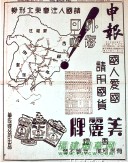
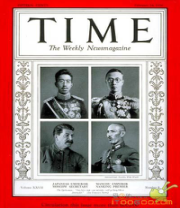
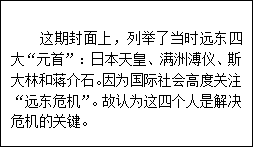
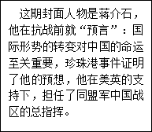
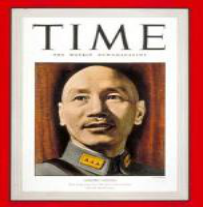
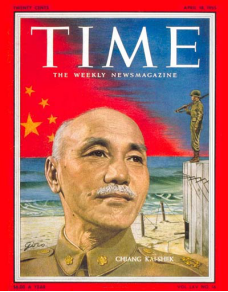

2014届高三第一次月考试卷
历 史
第Ⅰ卷 选择题（48分）
一、选择题（本大题共24小题，每小题2分，共计48分。在每小题给出的四个选项中，只有一项是符合题目要求的。）
1．王国维说：“商之继统法，以弟及为主，而以子继辅之，无弟然后传子。……盖周时以嫡庶长幼为贵贱之
制，商无有也。故兄弟之中有未立而死者，其祀之也与己立者同。”这表明( )
A．周代全面继承了商代的承继制度 B．周代的承继制度比商代更合理
C．周代在承继制度上确立了嫡庶差别 D．商代完全采取兄终弟及的承继制度
【答案】C
2．齐国原是姜氏的封国。公元前481年后，齐国的大夫田常及其后人逐渐控制国政，以至于自立为国君，并由周安王册命为齐侯，姜齐遂变为田齐，史称“田氏代齐”。这种现象从本质上反映了( )
A．郡县制的出现 B．中国历史进入春秋战国时期
C．大一统局面的出现 D．宗法制和分封制的破坏
【答案】D
3． “先时国家始制九品，各使诸郡选置中正，差叙自公卿以下，至于郎吏，功德材行所任。茂同郡护羌校尉
（官名）王琰，前数为郡守，不名为清白。而琰子嘉（即王琰之子王嘉）仕历诸县，亦复为通人（学识渊博通达的人）。嘉时还为散骑郎（官名），冯翊郡（地名）移嘉为中正。”该材料主要表明中正官( )
A．以严格的考试作为录用标准 B．大多在中央官员中选置产生
C．从各郡现任官员中选拔兼任 D．对当地人物的德才进行评定
【答案】C
4．官僚集团以皇帝为首，他们的决定最后要得到皇帝的认可，才可实行。一次汉文帝出行，有人惊了他的
马，这个人被送交廷尉治罪，廷尉张释之只让他交纳罚金，文帝认为处罚太轻。张释之说，假如你当时把这个人杀了也就算了，现在在我这里，那就得依法办事，最后文帝只好让步。这表明( )
A．廷尉做到了依法治国 B．官僚集团的抗衡制约了皇权
C．官僚政治取代了贵族政治 D．皇帝不受规章制度的约束
【答案】B
5．《文献通考》载：“宋代设官之制，名号、品秩一切袭用唐旧。……故三省、六曹、二十四司，互以他官典领，虽有正官，非别敕不治本司事。 事之所寄，十亡二三。……至于官入授受之别，则有官、有职、有差遣。”材料表明( )
A．宋代完全沿袭了唐代官制 B．宋代实行官称与职掌分离便于控制
C．三省六部制名存实亡 D．宋代官制更完备有利于提高行政效率
【答案】B
6．伯利克里曾说：“解决私人争执的时候，每个人在法律上都是平等的。让一个人担任公职优先于他人的时候，所考虑的不是因为他属于某一个特殊阶级，而是由于他的真正才能。任何人，只要他能够对国家有所贡献，绝对不会因贫穷而在政治上湮没无闻。”他强调的是( )
A．私人财产的多少决定雅典公民参政权大小 B．个人应当提高自身才能并忠诚于城邦
C．在雅典城邦事务方面，少数人服从多数人 D．雅典城邦消除了阶级歧视和阶级对立
【答案】B
7．根据罗马法，若要使物品交易成功，就必须具备下列条件：以现金或现物进行交易；须有五个证人和一名司秤在场，他们皆应是罗马公民；物件的转移必须在当事人双方在场时当面进行；在进行转让仪式时，必须经过某种正式的手势和言语的阐述。这些条件缺一不可。由材料信息可知该法( )
A．强调保护私有财产 B．极力维护贵族的特权
C．有利于调解贸易纠纷 D．体现了注重形式和程序化的特征
【答案】D
8．英国首相卡梅伦在北大演讲时说：“我在英国当首相没有专门的厨师为我做饭,只能去内阁蹭饭。不仅如此,每年收入全部公开。每周二、周四还要去下院接受质询，回来基本满脸都是口水。”上述言辞主要反映了英国首相( )
A．政治上无实权，必须服从议会 B．为官清廉，能与阁臣共进退
C．作为内阁首脑，接受议会监督 D．经济待遇与其政治地位不相称
【答案】C
9．现任美国总统奥巴马在自传《无畏的希望》中，回忆他当年在白宫与布什总统会面的情形：“突然……总统……他的声音变得激动，……变得既不习惯也不欢迎其他人打断他的话，他的亲和被一种近乎以救世主自居的固执所取代。……我意识到了权力带来的那种危险的孤立。我明白了开国者设计□□□□的智慧。”空缺部分最恰当的应该是( )
A．共和制度 B．制衡制度 C．民权制度 D．联邦制度
【答案】B
10．阅读下面有关美国政治生活的漫画，可以得出的正确结论是( )
A．美国政党政治体现了三权分立的原则
B．美国政党政治实现了竞选对手的公平竞争
C．国会与总统选举反映了美国政党政治的本质属性
D．美国国会或总统选举在程序上的公正性和合法性
【答案】C
11．先贤祠，从大革命爆发两年后的1791年起，这里成为了供奉法国伟人的地方。两百多年来先后安葬在先贤祠的72人中，有思想家、作家、艺术家、科学家，其中仅有11人是政治家。是否能安葬于先贤祠，必须经过国民议会讨论，并由总统最终签署命令。以下对材料解读正确的是( )
A．两百多年来法国人才济济 B．对思想文化的尊重是法国不断前行的力量
C．法国实行分权制衡的政治体制 D．法国人民不怎么喜欢政治家
【答案】B
12．根据1871年《德意志帝国宪法》，普鲁士虽然有能力否决不利于它的议案，但其他中小邦也可以联合起来以多数票制服普鲁士，确保自己的权力不受侵犯，甚至只要巴伐利亚、萨克森和符滕堡三个邦联合起来就可以否决对其不利的议案。这反映了德意志帝国( )
A．分裂割据的局面未完全消除 B．由各邦分享军事、外交大权
C．组织形式呈现联邦主义性质 D．体现普鲁士的专制主义传统
【答案】C
13．钦差大臣耆英代表清政府签订一 系列不平等条约后，于1844年11月奏称：“夷情变幻多端，非出一致，其所以抚靖羁縻之法，亦不得不移步换形。固在格之以诚，尤须驭之以术……有加以款接方可生其欣感者，并有付之包荒（包容）不必深与计较方能于事有济者。”（徐中约《中国近代史：1600—2000中国的奋斗》）由此可知( )
系列不平等条约后，于1844年11月奏称：“夷情变幻多端，非出一致，其所以抚靖羁縻之法，亦不得不移步换形。固在格之以诚，尤须驭之以术……有加以款接方可生其欣感者，并有付之包荒（包容）不必深与计较方能于事有济者。”（徐中约《中国近代史：1600—2000中国的奋斗》）由此可知( )
A．耆英为其签约出卖国家主权的行为辩解 B．清政府对鸦片战争的长远危害认识不清
C．系列条约的签订达到了抚靖羁縻的目的 D．清政府以签约展示天朝上国的外交诚信
【答案】B
14．“道光后期以来，满清王朝曾在抵御外侮的旗帜下领导过多次民族战争。……这是一个转折点，在西太后身上，民族战争失败的同时又意味着民族抵抗意识的全部丧失。”与“转折点”直接相关的不平等条约是( )
A．《南京条约》 B．《北京条约》 C．《马关条约》 D．《辛丑条约》
【答案】D
15．斯塔夫里阿诺斯在《全球通史》中指出：三次灾难的战争使中国受到了巨大的刺激，第一次是1840—1842年同英国的战争；第二次是1856—1860年同英法的战争，第三次是1894~ 1895年同日本的战争。这三次战争的共同之处是
A．中国逐步卷入资本主义世界市场 B．中央机构完全半殖民地化
C．通商口岸的开放是由内地向沿海扩展的 D．列强侵略以资本输出为主
【答案】A
16．“义和团运动无疑比洋务派、改良派表现了更多的反侵略勇气，但破产小农和手工业者归复自然经济的强烈愿望又使他们的眼界无法越出所处的时代。”这句话表明了义和团运动的双重特征是( )
A．“灭洋”与“扶清” B．反帝与反封建 C．爱国与保守 D．正义与非正义
【答案】C
17． 2013年2月中国新闻网《美日在美本土举行联合登陆演习 模拟夺岛作战》报道：“此次联合演习于上月 22日开始，2 月中旬结束……有观察人士认为，美国通过军演来训练日本登陆和夺岛作战的能力，有为钓鱼岛局势埋下‘伏笔’的可能……此次是日本一个月内的第三次目标性极强的军演。”历史上美日勾结以针对中国的事件是
A．1894年日本悬挂美国国旗突然发动黄海海战 B．1900年的八国联军侵华
C．七七事变后美国继续保持与日本的贸易往来 D．二战后日本谋求政治大国地位
【答案】B
18．中华民国临时政府成立后，孙中山任临时大总统，实行总统制；为了限制袁世凯的权力，孙中山颁行《中华民国临时约法》，规定实行责任内阁制。这种做法( )
A．引发政体频繁变更社会动荡 B．权力分散降低行政效率
C．有利于防止专制维护共和 D．因人设法违背法律精神
【答案】D
19．1921年7月，《中国共产党第一个决议》提出对现有其他政党，应采取独立的攻击的政策。1923年6月《关于国民运动及国民党问题的议决案》提出根据共产国际执行委员会议决议，中国共产党须与中国国民党合作，共产党党员应加入国民党。党的方针出现变化的主要原因是( )
A．国内政治形势发生变化 B．严格执行共产国际的决议
C．孙中山同意与中共合作 D．认识到统一战线的必要性
【答案】D
20．右图为上海滩最早刊登的抗日宣传广告：把绘有铁路干线的东北三省地图作为主图案，其上部印有“请国人注意东北形势”字样，右侧绘有一个巨大的叹号；叹号两侧是“外侮日亟”四个美术字。广告的中右部印有“国人爱国，请用国货”字样，最下才是“美丽牌”、“有美皆备，无丽不臻”的广告语，并绘有三包“美丽牌”卷烟。通过该广告，可以判断( )
A．日本侵略日益加剧中日民族矛盾
B．抗战时期国人民族危亡意识的增强
C．国共已就合作抗日达成共识
D．中华民族已开始了全民族的抗战
【答案】A
21．“从晋西高山到东海海岸，从黄河畔到长城边，都成了战场……第一阶段（8月20日至9月10日）是对正太、同蒲、平汉、津浦等华北交通要道的破袭；第二阶段（9月22日至10月上旬），延安地区、山东地区、安徽地区的八路军也投入作战，任务是摧毁交通线两侧和深入各抗日根据地的敌伪据点，扩大战果；第三阶段（10月6 日至翌年1月24 日），主要任务是反击日伪军的报复扫荡。”材料描述的是
A．淞沪会战 B．武汉会战 C．徐州会战 D．百团大战
【答案】D
22．“资产阶级的生产关系和交换关系，资产阶级的所有制关系，这个曾经仿佛用法术创造了如此庞大的生产资料和交换手段的现代资产阶级社会，现在像一个魔法师一样不能再支配自己用法术呼唤出来的魔鬼了。”《共产党宣言》的这一论述主要表明( )
A．资产阶级在历史上的进步性和革命性 B．资本主义社会无法解决自身的基本矛盾
C．无产阶级进行革命的条件已经成熟 D．资产阶级已经堕落为毫无进步性的魔鬼
【答案】B
23．马克思评价某事件时说：这次革命不是一次反对哪一种国家政权形式——正统的、立宪的、共和的或帝
制的国家政权形式的革命。它是人民为着自己的利益重新掌握自己的社会生活。它不是为了把国家政权从统治阶级这一集团转给另一集团而进行的革命，它是为了粉碎这个阶级统治的凶恶机器而进行的革命。“这次革命”指( )
A．光荣革命 B．美国建立 C．巴黎公社 D．十月革命
【答案】C
24．列宁在向彼得格勒苏维埃会议发表一次讲话时说：“在国内，农民中很大一部分人都说：‘我们不再跟资本家打交道了，我们要同工人一道干’。我们只要颁布一项废除地主土地所有制的法令，就可以赢得农民的信任，农民会懂得，只有同工人结成联盟，他们才能得救。”基于此，列宁领导的苏维埃政权实行的措施是( )
A．颁布《土地法令》 B．实行战时共产主义政策
C．实行新经济政策 D．建立集体农庄
【【答案】A
第Ⅱ卷 非选择题（52分）
二、非选择题（本大题共3小题，共计52分）
25.阅读材料，完成下列各题。
材料一 贞观六年，中书舍人高季辅上言：“外官卑品，犹未得禄，饥寒切身，难保清白，今仓廪浸实，
宜量加优给，然后可责以不贪，严设科禁……上许之。”
贞观十八年，太宗本人对当朝重臣做了精当评价，其中，杨师道“性行纯和，自无愈违"，岑文本“性质敦厚"……戴宵性贞正，死时“宣宇弊陋，祭享无所，令有司特为造庙”。
（高宗永徽三年）政府颁布《唐律疏议》规定：（官员）受财而枉法者，一尺杖一百，一匹加一等，十五匹绞。不枉法者，一尺杖九十，二匹加一等，三十匹加役流。无禄者，各减一等。
——摘编自王春瑜《中国反贪史》
材料二 宋初统治者认识到官员的俸禄与其廉洁的关系，实行了一项精简官员编制、合并州县、提高官吏待遇的政策。州县官员编制精简后，每位州县官加俸五千钱，之后又不断增加各种额外的津贴。与其他朝代相比，宋朝给予官员的俸禄待遇是最为优厚的 。宋代的这种高薪制，对于官员的廉政有正面的保障作用。
——《宋史》
材料三 朱元璋坚持“吾治乱世，刑不得不重”的观点，立下了“杀尽贪官”的决心，制定峻法，惩治贪官。《大诰》就是其重典治贪的具体表现。《大诰》中普列各式酷刑，如断手、斩趾、阉割、枭首、凌迟等三十多种。朱元璋还创造“剥皮实草”之刑，凡贪污六十两银子以上者“枭首示众，仍剥皮实草”。朱元璋还建立了厂卫制度，锦衣卫直接绕过国家正常的司法机构进行缉捕、拷问，其主要惩治对象是不法官吏。
材料四 在汉代，御史大夫专门行使监督权，其下属御史中丞常驻内宫，专门负责监督王室和宫廷也可以说是监察皇帝的；另一下属御史丞则负责监督政府，不论中央、地方都在内。值得注意的是，御史大夫是宰相的副手，因此，监察权是相权的一部分。……唐代单独设立御史台，其职权限于监察政府，没有监察皇帝和宫廷的权力。但在政府中，仍存在专责监督皇帝的，那就是谏官，谏官由宰相任命。宋朝谏官改由皇帝任命，他们就不再监督皇帝，反过来监督宰相。明代将御史台改为纠（都）察院，专门监察政府。
——摘编自管华《我国古代政治制度的宪法学透视》
材料五 在那个达方的一切历史里，是连一段表现自由精神的记录都不可能找到的,那里，除了极端的奴役而外，我们将永远看不见任何其他东西……因此，中国是一个专制的国家。它的原则是恐钸。
——孟德斯鸠《论法的精神》
（1）据材料一，概括唐朝反腐败的举措。（3分）根据材料二和材料三概括宋初和明初廉政措施的特点。（4分）
（2）据材料四，指出中国古代监察制度的变化趋势，其反映的本质问题是什么？（4分）
（3）依据材料五，概括孟德斯鸠对中国古代政治制度特征的认识。根据材料并结合所学知识,评析他的观点（提示：观点明确，史论结合，论述充分，语言简要流畅）。（6分）
【答案】（1）举措:高薪养廉；严刑峻法；褒奖清廉官员（或树清廉典型）。（3分）宋初特点：运用经济手段减员增俸来促进官员廉洁自律（2分）明初特点：反腐败极端化、非理性（2分）
（2）变化趋势：由监察政府、皇帝到只监察政府；监察权独立行使。（2分）本质问题：皇权不断强化（2分）
（3）认识：中国古代实行君主专制，具有恐怖和极端奴役性。（2分）
评析：合理性：秦汉以来，中国确立专制主义中央集权制度；明清时期，君主专制极端强化；中国古代法律严酷性；思想控制严苛；重农抑商和闭关锁国使中国逐渐落伍于世界。
不妥之处：明清以前皇权要受官僚政治（如：三公九卿制、三省六部、明代的内阁、清代的议政王大臣会议，宋代以前还保留了朝议制度）的限制；建立反腐和监察制度保证的社会政治清明；儒家“仁政”思想作为治国理念；明清时期农耕经济达到顶峰，统一成为中国历史的主流，保证了中华文明的连续性。（4分）
26．阅读下列材料，完成下列各题。
材料一 “光荣革命”使英国摆脱了专制王权，从而在欧洲第一个开始政治现代化的历程。……英国现代化是一个和平的过程，传统的社会在和平和渐进上得到改造……。
——钱乘旦：从历史学视角透视世界现代化进程
在上书光绪帝的奏折中，康有为摘引了《孟子》和《周礼》中的相关内容，证明了自己主张的“君民共主”符合“先王之制天下，与民共之”的古训。其后的孙中山却指出：“我们定要为平民革命，建国民政府，这不只是我们革命之目的，并且是我们革命的时候所万不可少的。”
——《中国近代史》（商务印书馆）
材料二 洛克主张的核心是把立法权与行政权分离……在这一理论基础的指导下，英国资产阶级革命得以和平的方式完成……孟德斯鸠在此基础上将三权扩大到立法权、行政权和司法权……三权必须分立，且必须相互制约。美国的开国之父们在制定美国宪法时，运用了权力制衡原则，主张立法司法行政三权分立，议会参众两院拥有立法权，总统享有行政权，法院掌有司法权，三权彼此制约，确保权力平衡。
——陈曦《浅谈美国的权力制衡机制》
材料三 美国哥伦比亚大学政治教授理查德·纽斯泰特认为……三个机关之间的相互合作也日益重要。例如立法权由国会行使，但法院有解释宪法和法律的权力，法官造法、法院也在一定程度上担负着立法的职责。又例如司法权，虽由法院行使，但一些带有裁判性质的权力正越来越多地由行政机关行使。这些都说明了严格意义上的权力分立是不存在的。
——摘编自《浅谈宪法中的分权制衡原则》
材料四 第三共和国宪法最大的优势就是包容。这种包容令这部宪法成为法国寿命最长 的宪法，共和主义在实施这部宪法的过程中深入法国人心。虽然第三共和国宪法没有逻辑 严密的理论叙述和制度上的设计，但是它所彰显的协商民主和求同存异的精神为第三共和 国历届政府的施政提供较大的发展空间，法国宪政制度也是在这个时期逐步发展成熟。 ……从街垒到议会，1875年宪法的制定是在斗争与妥协中产生的，同时它给了法国人一个 政治色彩不浓、人民能自由发挥的政治环境。1875年宪法使得法国完成向垄断资本主义 的过渡，用一个相对稳定的时间，实现了共和国的繁荣，法国从此进入了黄金时代。尽管第 三共和国最终还是在无休止的政治斗争中衰落，但是1875年宪法的历史作用是目前任何 一部法国宪法所无法取代的，它吸收了托克维尔的民主精神和政治理念，在宪政实践的每 个环节都能从法国的民情出发，真正将因“革命”而“分裂”的法国重新统一了起来。
——贾程秀男《论托克维尔民主思想对法国近代宪政建设的影响》
（1）运用所学知识说明“光荣革命后，英国传统的社会在和平和渐进上得到了改造”的表现。（5分）结合材料一中康有为和孙中山的政治主张，分析中国近代政治民主化进程的特点。（2分）
（2）据材料二、三，概括美国政治权力运行的主要特点并结合所学知识分析其意义。（5分）
（3）根据材料四，概括说明法国宪政形成演变的特点和历史影响。（5分）
【答案】（1）英国：颁布《权利法案》，确立君主立宪制；逐步形成和完善内阁制度；资产阶级政党政治逐渐形成；1832年议会改革，工业资产阶级获得议会中更多的席位。（5分，任答3点即可）
特点：由倡导君主立宪到提倡民主共和；民主化进程曲折艰难。（2分）
（2）特点：分权与合作相结合。（2分）
意义：分权利于防止独裁、腐败出现，保证民主政治的运行；合作利于提高行政效率，保障美国长期、稳定的发展。（3分）
（3）特点：具有较大的包容性，彰显了协商民主和求同存异的精神，在斗争和妥协中产生，体现了法国的民情。（3分）
影响：促进了法国民主政治的发展和完善，为法国资本主义的发展提供了相对稳定的政治环境，促进了社会经济的发展与繁荣。（2分）
27．（17分）阅读下列材料和图片，回答问题。
 材料一 1936年2月24日《时代》周刊封面人物

材料二 1942年6月1日《时代》周刊封面人物

材料三 1955年《时代》周刊封面，人物是蒋介石，名字前面没有任何头衔。

请回答：
(1)材料一中《时代》周刊认为这四大“元首”都是解决问题的关键，你同意这个观点吗？请说明你的理由。（5分）
(2)根据材料二并结合所学知识，列出蒋介石及其领导的国民政府在抗战中有什么积极表现？（4分）
(3)根据材料三图中的信息说出海峡两岸是怎么样的关系？是什么原因造成的。(4分)
(4)综合以上材料和所学知识，分析《时代》周刊将以上人物列为封面人物的原因。（4分）
【答案】（1）不完全同意。（1分）理由：溥仪是日本扶植下的傀儡皇帝。苏联忙于欧洲事务和国内建设，无暇东顾，他们都不是解决危机的关键。中国是抵抗日本侵略的主要国家，蒋介石的态度和政策决定了危机能否解决。日本是危机的制造方，当然也成为危机解决的关键。（4分）
(2)表现：联共抗日，促成抗日民族统一战线；领导正面战场的抵抗（或组织了淞沪会战、太原会战、徐州会战、武汉会战等重大战役）；争取国际援助，加入世界反法西斯同盟。(4分)
（3）关系：反映出当时海峡两岸的敌对形态。说明：“一个国民党士兵孤单的守望着大陆”说明当时国民党处于劣势，美国政府对蒋介石也终将会失去耐心。(2分)
原因：两党多年以来的积怨与意识形态的对立，加上美国的政治阴谋和对蒋介石政府的支持导致的。(2分)
(4)原因：美国《时代》周刊看到了中日战争与国际局势的变化密切相关；看到了蒋介石及其国民政府对抵抗日本侵略的作用；《时代》周刊的封面人物都是当时左右历史的风云人物，而蒋介石在中国的历史上也是这样的人。